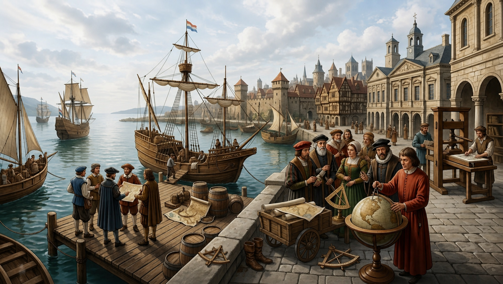
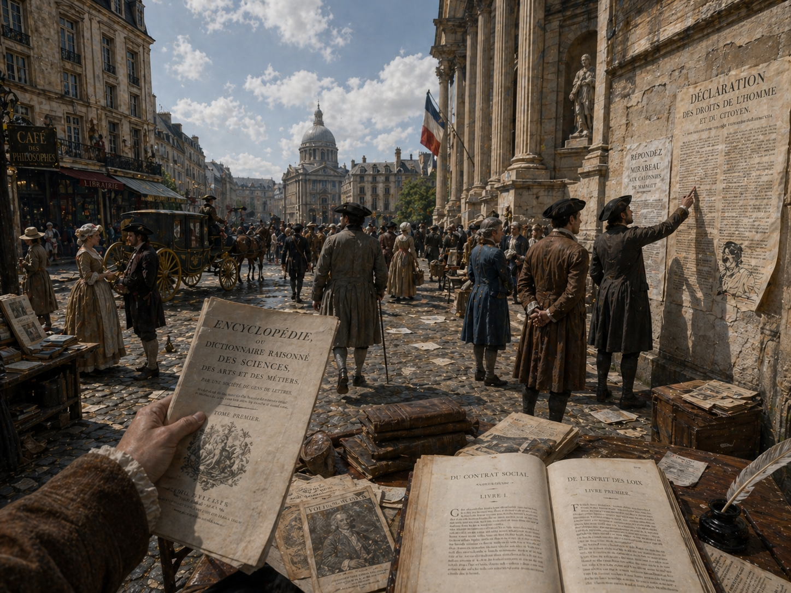
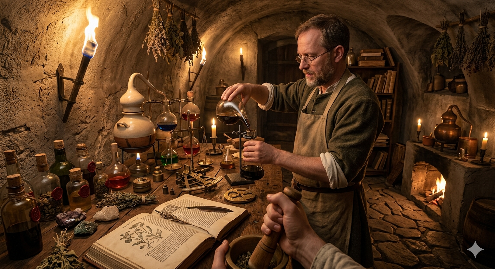

ca. 1492 - 1789
De Vroegmoderne Tijd vormt de brug tussen de ridders van de middeleeuwen en de fabrieken van de moderne tijd. Het is een tijdperk van ongekende durf en nieuwsgierigheid. Terwijl schepen de horizon overstaken om onbekende continenten in kaart te brengen, verlegden denkers en wetenschappers de grenzen van de menselijke geest.


ca. 1492 – 1560
Met de ontdekking van Amerika door Columbus in 1492 begon een tijdperk van ingrijpende veranderingen. Portugezen en Spanjaarden verkenden de wereld en openden via nieuwe zeeroutes ongekende economische mogelijkheden. Voor de inheemse bevolking was dit echter een catastrofe door epidemieën en geweld.
De boekdrukkunst versnelde de verspreiding van ideeën, wat leidde tot de reformatie toen Martin Luther in 1517 zijn stellingen publiceerde. Europa raakte hierdoor religieus verdeeld in een protestants noorden en een katholiek zuiden.
ca. 1648 – 1715
De zeventiende eeuw bracht een wetenschappelijke revolutie met denkers als Galilei en Newton. Tegelijk groeide de welvaart in West-Europa, waarbij de Nederlandse Republiek via de VOC een wereldwijde handelsmacht werd.
Politiek gezien leidde de Glorious Revolution in Engeland tot een parlementair stelsel, terwijl in Frankrijk Lodewijk XIV het continent domineerde. Deze Franse macht stuitte echter op groeiende weerstand van Europese coalities.

ca. 1715 – 1789
In de achttiende eeuw stelden verlichtingsfilosofen zoals Voltaire en Montesquieu de menselijke rede centraal. Hun ideeën inspireerden de Amerikaanse onafhankelijkheid en streden nieuwe grootmachten om de Europese hegemonie.
De toenemende sociale ongelijkheid en de verspreiding van verlichtingsideeën maakten de weg vrij voor de Franse Revolutie van 1789, wat het definitieve einde van de vroegmoderne tijd inluidde.